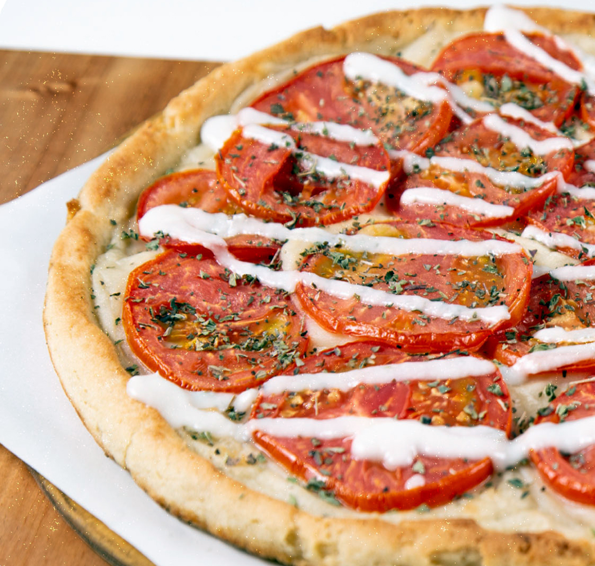
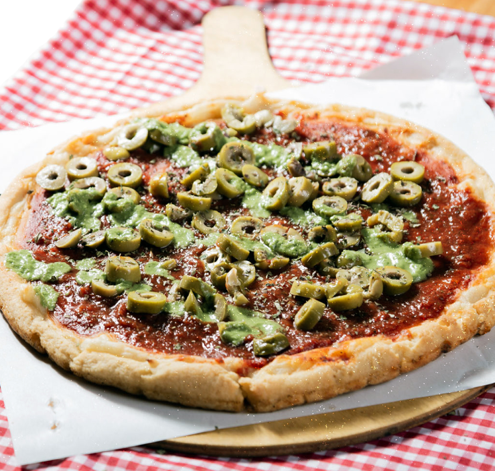
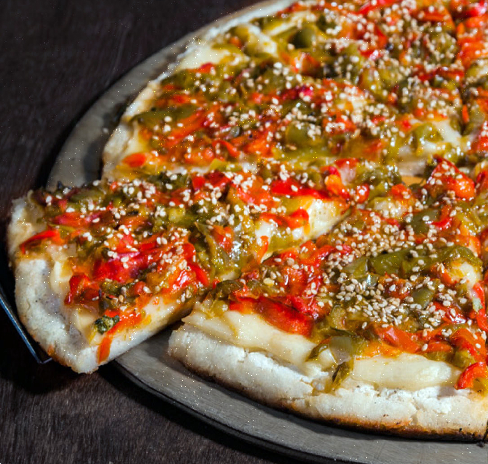
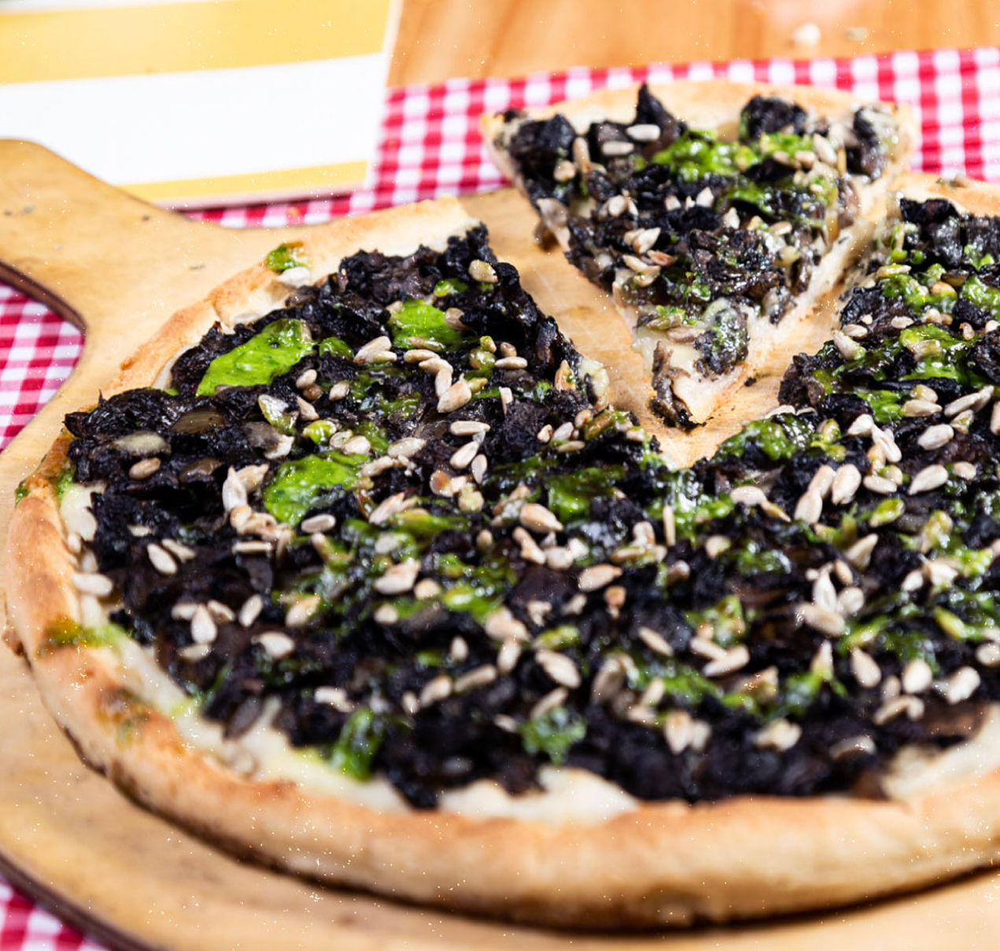
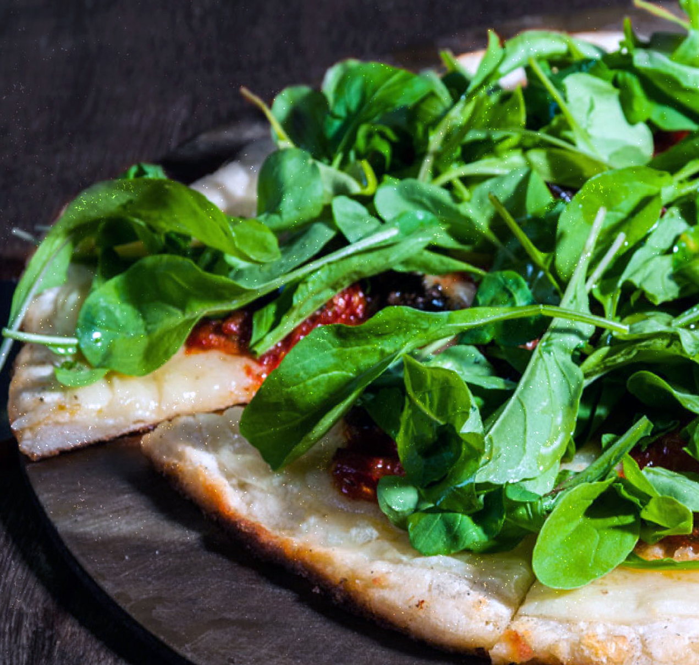
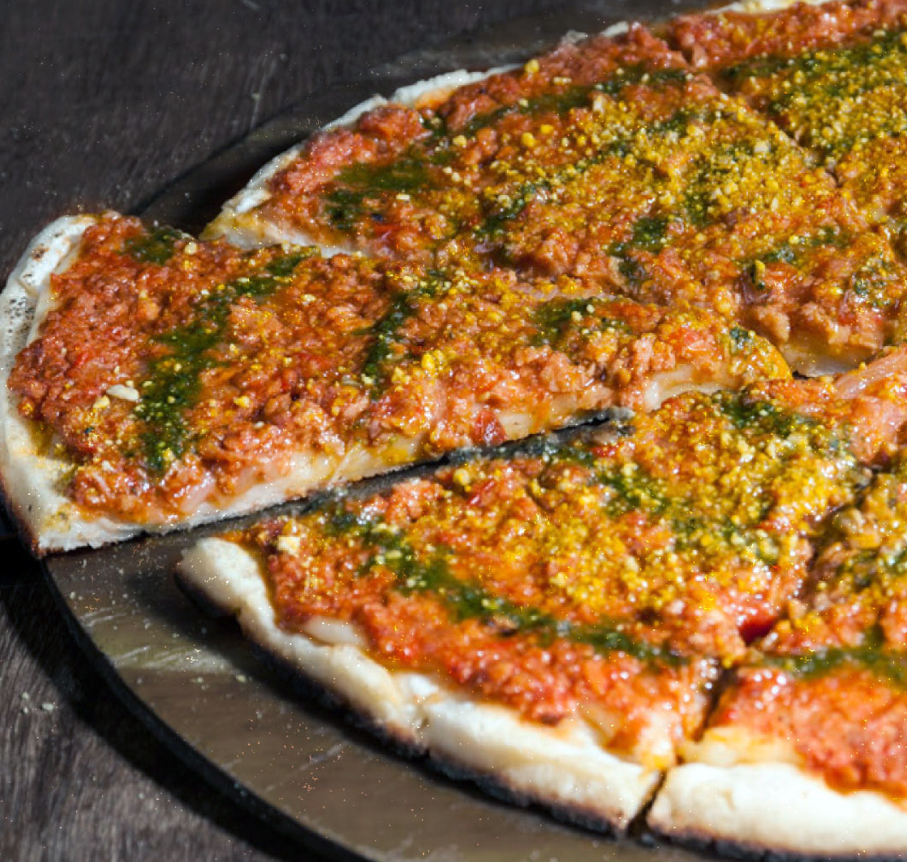

VEGALITANA
VEGALITANA
Queso Paparella, tomates en rodajas, ajo y orégano y alioli de ajo.

DELLA MAMA
DELLA MAMA
Queso Paparella, salsa de tomate casera, aceitunas verdes, orégano y alioli de albahaca.

PORTUGAL
PORTUGAL
Queso Paparella, morrones rojos y verdes grillados, cebolla, semillas de sésamo, aceite de oliva.

RÚSTICA PROVENZAL
RÚSTICA PROVENZAL
Queso Paparella, Champignones frescos Salteados con cebolla, semillas de girasol tostadas y alioli de provenzal.

ROCOLA
ROCOLA
Queso Paparella, tomates secos especiados, rúcula fresca, aceitunas negras y aceite de oliva.

BOLONIA
BOLONIA
Queso Paparella, bolognesa vegana al vino tinto y salsa de tomate casera. Aceitunas verdes y aceite de albahaca.